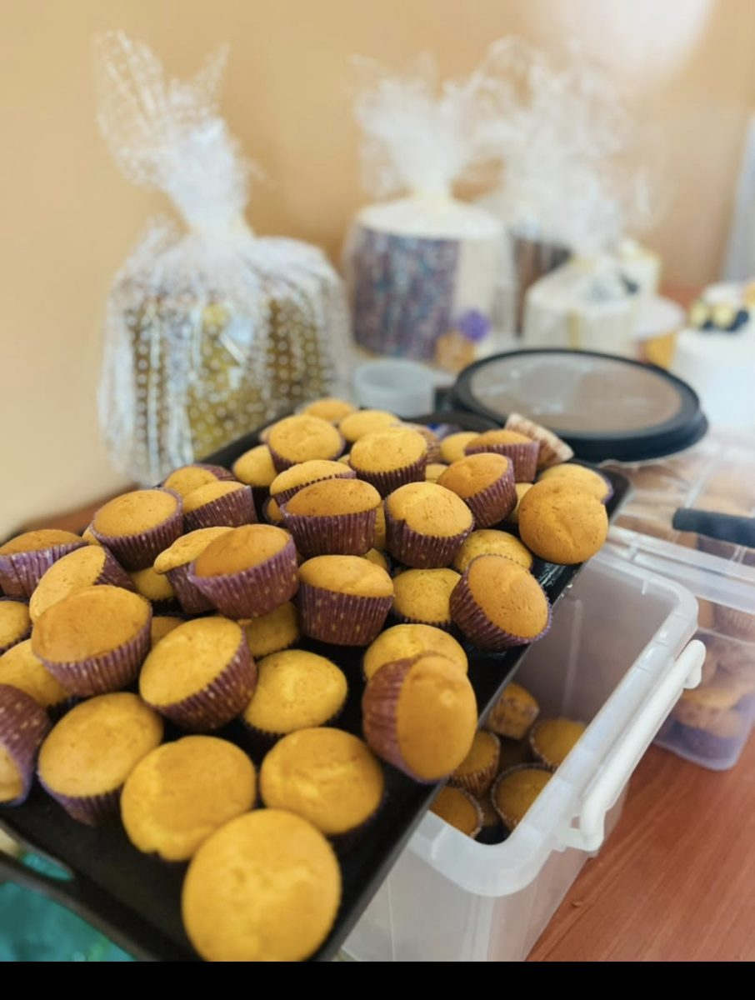
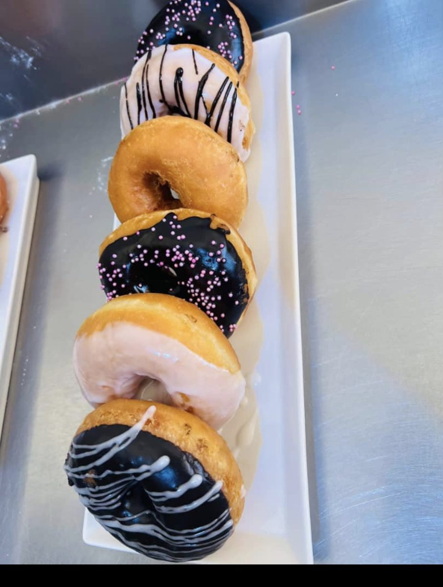
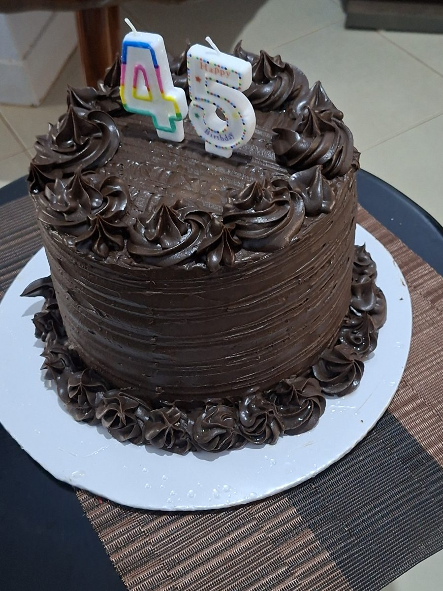
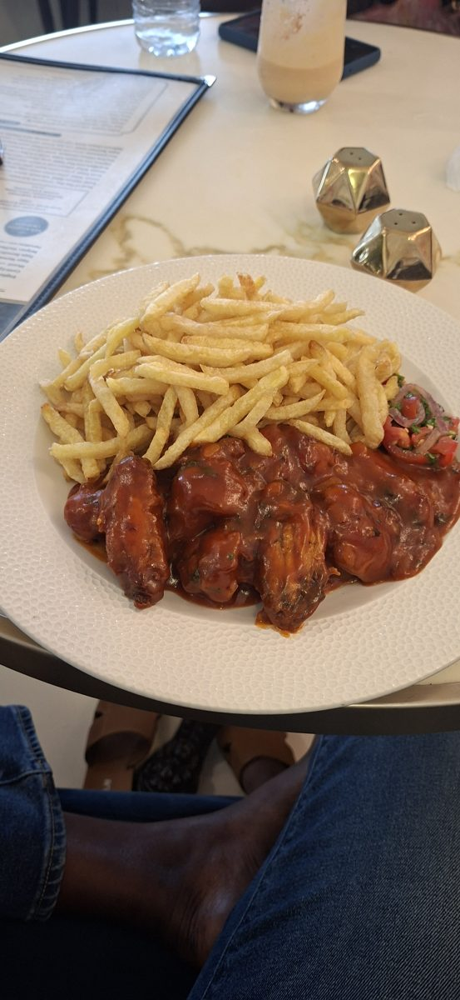
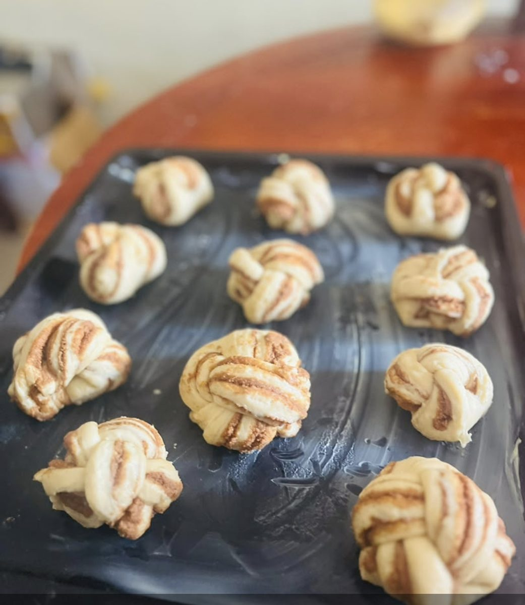
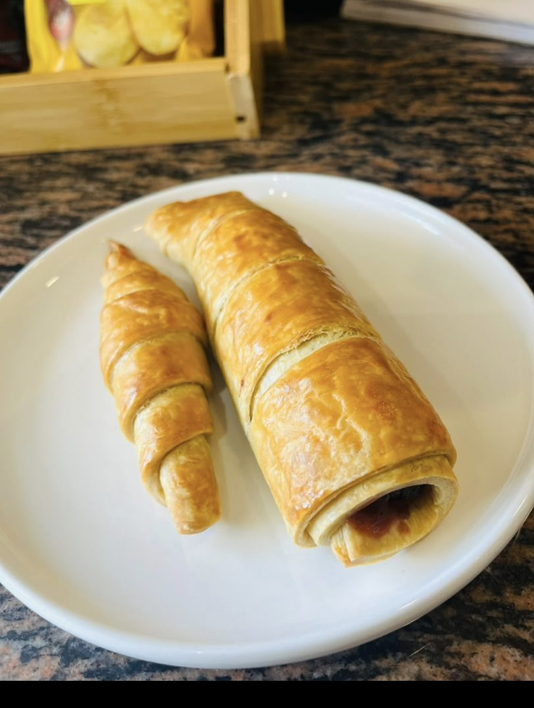
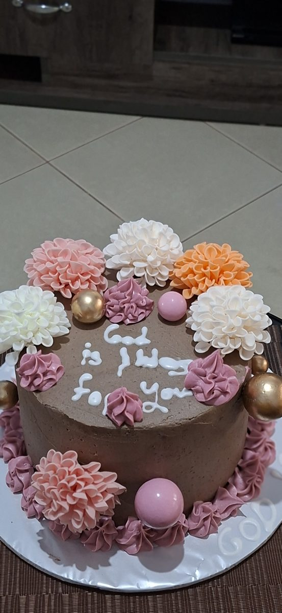

Hobby
MY HEART BEAT
Imagine coming home after a long day of classes, walking into the kitchen and turning simple ingredients into a master piece of different flavors.
whether you are tossing vegetables into a sizzling pan or watching a loaf of bread rise through the oven glass, working with food is one of the most rewarding things you can do.
while many people group them together and find it a chore, cooking and baking are actually two different forms of art.



cooking: The art of freedom and expression of different taste
Cooking is like jazz music. its all about improvisation, tasting as you do and trusting your gut . when you make soup or sauce, a stir-fry or pasta dish, you do not have to follow the rules perfectly or add each and everything in it. you did do what makes you love and enjoy the dish more and more.

BAKING: the science of precision and Patience
If cooking is an art, baking is definitely a science. Baking requires chemical reactions
- Exact measurements: Missing a half-teaspoon of baking powder or adding too much flour can turn it to a dense brick.
- The waiting game: unlike cooking, you cannot taste a cake while its in the oven, you have to trust the recipe and wait for the timer to go off .
- The reward: there is nothing quite like the magic of watching simple ingredients like flour , eggs , sugar transform into beautiful pastries.



Healing power of the kitchen
Beyond the delicious rewards, spending time in the kitchen is incredible for your mental well-being. it fotces you to step away from your phone, classes assignments, and focus entirely on the present moment.
chopping vegetable can be deeply therapeutic and kneading dough is an amazing way to relieve stress after a toug exam.
Conclusion
At the end of the day, cooking fills your heart but baking feeds your soul. cooking teaches you horw to be flexible and creative, while baking teaches you patience and precision
Both are essential skills that make my life much sweeter and alot more flavorful